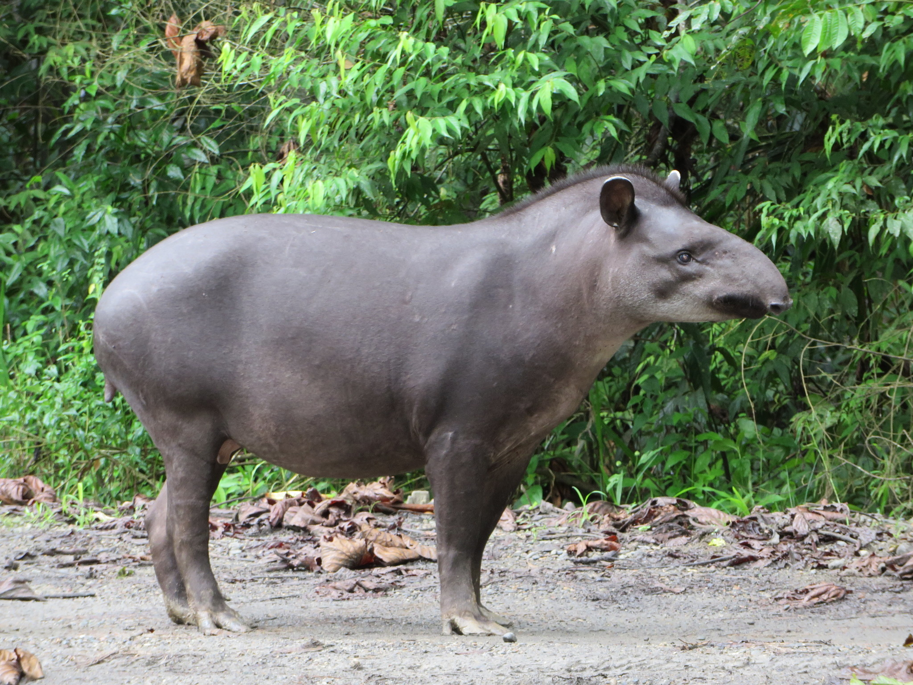

Onça Pintada
Panthera onca

Também chamado de jaguar é o maior felino das Américas e o terceiro maior do mundo, ameaçado de extinção no Brasil por conta da caça ilegal, aumento do desmatamento e queimadas. Carnívoro e vertebrado pertencente a família felidae com o seu nome cietífico de Panthera Onca.
Habitat
Estão presentes na América do Norte, Central e Sul, vivendo cerca de 15 anos na floresta, e até 25 anos em cativeiro.
Reprodução
As fêmeas atingem a maturidade sexual em 2 anos e os machos em 3. Eles se encontram pelo odor e vocalizações durante o acasalamento. A gestação dura cerca de 3 meses e cada ninhada tem de 1 a 4 filhotes.
Peso
Entre 55kg e 135kg
Altura
O comprimento do corpo varia de 1,4 a 1,8 metros para machos e de 1,2 a 1,7 metros para fêmeas, com caudas de 45 a 63 cm e corpo medindo entre 68 e 76 cm.

Curiosidade
Os filhotes nascem cegos, portanto nos primeiros meses de vida são totalmente dependentes da mãe.
Arara Azul
| Nome Científico | Reino | Filo |
|---|---|---|
| Anodorhynchus Hyacinthinus | Animalia | Chordata |
| Classe | Ordem | Família |
|---|---|---|
| Ave | Psittaciformes | Psittacidae |
Altura
Chega a atingir mais de um metro de comprimento do bico até a ponta da cauda.

Habitats
É encontrada em formações savânicas ou florestas no Brasil, Paraguai e Bolívia, as maiores populações são encontradas no Pantanal
Peso
Até 1,3kg, quando filhotes apresentam cerca de 30 gramas e 82mm.
Reprodução
Os ovos são colocados em ninhos em ocos de árvores ou em paredões rochosos. A fêmea bota de um a três ovos e os choca por cerca de um mês. Os filhotes aprendem a voar após três meses, mas se separam dos pais entre 12 e 18 meses.
Alimentação
Alimentam-se de frutos como buriti, bicuri e macaúba.
Curiosidade
Sua incrível longevidade permite que em cativeiro viva até 80 anos e na natureza varia entre 30 e 50 anos.
Jacaré Açu
Melanosuchus niger
Detalhes
O Melanosuchus niger, ou Jacaré-Açu, é o maior jacaré do Brasil, com até seis metros de comprimento e uma expectativa de vida de até 100 anos. Ele tem coloração escura com manchas.

Reprodução
Ocorre uma vez por ano em média com uma ninhada de 40 a 50 ovos. Ameaçado de extinção por conta do valor de seu couro e carne.
Habitats
Águas calmas como lagos com conexão a grandes rios de água escura, igarapés, igapós e áreas alagadas.
Peso
360kg a 500kg
Alimentação
É um carnívoro que tende a se alimentar principalmente de insetos, caranguejos, caramujos, peixes e mamíferos.
Os texto inspirados são dos sites
Toda Matéria, Mundo ecologia e Portal Amazônia.
Sucuri
Eunectes murinus

A sucuri é uma das maiores cobras do mundo, com até 9 metros de comprimento, e vive em áreas alagadas da América do Sul. É semi-aquática, alimenta-se de grandes mamíferos e répteis, e mata suas presas por constrição
Tamanho e Peso

É uma das maiores serpentes do mundo, podendo ultrapassar 9 metros de comprimento. Seu corpo é robusto e musculoso, pesando até 250 kg.
Alimentação
Alimenta-se de grandes presas, como capivaras, antas, jacarés, e até pequenos veados. Ela mata suas presas por constrição, apertando até que a vítima pare de respirar.
Reprodução
A sucuri é ovovivípara, ou seja, os ovos se desenvolvem dentro do corpo da fêmea, e os filhotes nascem vivos. As ninhadas podem ter até 80 filhotes.
Habitat
Habita regiões pantanosas, rios e áreas alagadas da América do Sul, com maior presença na Amazônia e Pantanal. Passa muito tempo na água, onde se sente mais à vontade.
Os texto inspirados são dos sites
Toda Matéria, Mundo ecologia e Portal Amazônia.
Anta
Tapirus terrestris

A anta (Tapirus terrestris), também conhecida como anta-brasileira, é o maior mamífero terrestre da América do Sul. Em cativeiro, pode viver por até 35 anos, mas na natureza sua expectativa é menor devido a predadores e perda de habitat.
Tamanho e Peso

Adultos podem atingir entre 1,7 e 2,5 metros de comprimento e pesar de 150 a 300 kg.
Alimentação
Herbívora, alimenta-se de uma grande variedade de plantas, incluindo frutas, folhas e brotos, ajudando na dispersão de sementes.
Habitat
Vive em florestas tropicais e subtropicais, além de áreas úmidas, próximas a rios e lagos, e savanas na América do Sul.
Reprodução
A gestação da anta dura 13 a 14 meses, e nasce um único filhote listrado. Ele é amamentado por até 8 meses e atinge a maturidade sexual entre 3 e 4 anos.
Ariranha
Pteronura brasiliensis
A ariranha (Pteronura brasiliensis) é o maior tipo de lontra, encontrada em rios e lagos da América do Sul. Ela pode medir até 1,8 metros e vive em grupos familiares. Excelente nadadora, se alimenta principalmente de peixes. É muito vocal e comunicativa. A espécie está ameaçada de extinção devido à perda de habitat e caça ilegal.
Tamanho e Peso

É a maior espécie de lontra, medindo de 1,5 a 1,8 metros de comprimento, incluindo a cauda, e pode pesar até 32 kg. Possui um corpo longo, musculoso e uma pelagem curta e densa de cor marrom escura com manchas claras na garganta.
Alimentação
Carnívora, a ariranha se alimenta principalmente de peixes, mas também pode caçar crustáceos, pequenos mamíferos e aves aquáticas.
Habitat
Vive em rios, lagos e pântanos das regiões tropicais da Amazônia, Pantanal e Cerrado, preferindo áreas com águas calmas e margens densas de vegetação.
Reprodução
A reprodução da ariranha ocorre geralmente entre a estação seca e o início das chuvas. Após um período de gestação de cerca de 65 a 70 dias, a fêmea dá à luz de 1 a 5 filhotes, em tocas próximas à água. Os filhotes nascem cegos e dependem dos pais e do grupo, que os protegem e cuidam até que possam nadar e caçar, por volta dos 3 meses de idade.